吉礼是五礼之冠，主要是对天神、地祇、人鬼的祭祀典礼。《礼记·祭统》说：“礼有五经，莫重于祭。”按照《周礼·春官·大宗伯》的说法，吉礼用以“事邦国之鬼神示（祇）”，是祝祈福祥之礼。主要内容有：祀昊天上帝；祀日月星辰；祀司中、司命、风雨、雨师。以上是祭天神。祭社稷、五帝、五岳；祭山林川泽；祭四方百物，即诸小神。以上是祭地祇。袷祭先王、先祖；禘祭先王、先祖；春祠、夏禴（礿）、秋尝、冬烝，享祭先王、先祖。以上是祭人鬼。
后代从这三类祭祀中又衍生出许多项目，这里列为天、地、宗庙、其他四类，分别加以介绍。
古文献记载，虞舜、夏禹时已有祭天的典礼，称为“类”。在殷商甲骨文中，天神是“帝”，或称“上帝”，他是自然和下国的主宰，他的周围还有日、月、风、雨等作为臣工使者。祭祀上帝要杀死或烧死俘虏和牲畜作为祭品，耗费大量的财富。到了周代，“天”的观念逐渐代替了殷人所说的“上帝”、“帝”。天帝的形象被人格化，周王又有了“天子”的称谓。周王是作为天帝之子在人间统治人民的，他也要像侍奉父亲一样侍奉天帝。祀天就是对天帝的侍奉、享献的仪式。殷周以来，对天帝的称呼也日趋繁化，名目错出，有：帝、上帝、天、皇天、昊天，皇天上帝、昊天上帝、维皇上帝，等等，指的都是有意志的人格化的神。
天本来只有一个，但是到了汉代谶纬之书风行以后，便出现了“六天”之说。据说，天上的紫微宫是天帝之室，北辰（北极星）名耀魄宝，即为天帝，一名“太一”，是“天神之最尊贵者”。［13］在太微宫中，则有五个星位，即为五方天帝。五帝是“五行精气之神”，人间的帝王和朝代就是五帝轮流所感应而生的，因此也称为“感生帝”，如尧是赤帝所感生，舜是黄帝所感生，禹是白帝所感生，汤是黑帝所感生，周文王是苍帝所感生。帝王祭天当然要祭祀与自己一朝相应的天帝。五行、五方帝又与五方、五色、四季、五人神、五人帝等一一相配，构成了我国古代祭天大典的基本网络。
周代祭天的正祭是每年冬至之日在国都南郊圜丘举行。“圜丘祀天”与“方丘祭天”，都在郊外，所以也称为“郊祀”。圜丘是一座圆形的祭坛，古人认为天圆地方，圆形正是天的形象，圜同圆。祭祀之前，天子与百官都要斋戒并省视献神的牺牲和祭器。祭祀之日，天子率百官清早来到郊外。天子身穿大裘，内着衮服（饰有日月星辰及山、龙等纹饰图案的礼服），头戴前后垂有十二旒的冕，腰间插大圭，手持镇圭，面向西方立于圜丘东南侧。这时鼓乐齐鸣，报知天帝降临享祭。接着天子牵着献给天帝的牺牲，把它宰杀。这些牺牲随同玉璧、玉圭、缯帛等祭品被放在柴垛上，由天子点燃积柴，让烟火高高地升腾于天，使天帝嗅到气味。这就是燔燎，也叫“禋祀”。随后在乐声中迎接“尸”登上圜丘。尸由活人扮饰，作为天帝化身，代表天帝接受祭享。尸就座，面前陈放着玉璧、鼎、簋等各种盛放祭品的礼器。这时先向尸献牺牲的鲜血，再依次进献五种不同品质的酒，称作五齐。前两次献酒后要进献全牲、大羹（肉汁）、铏羹（加盐的菜汁）等。第四次献酒后，进献黍稷饮食。荐献后，尸用三种酒答谢祭献者，称为酢。饮毕，天子与舞队同舞《云门》之舞，相传那是黄帝时的乐舞。最后，祭祀者还要分享祭祀所用的酒醴，称为“嘏”，后世也叫“饮福”。天子还把祭祀用的牲肉赠给宗室臣下，称“赐胙”。后代的祭天礼多依礼经制定，但以神主或神位牌代替了尸。
秦代祭天的有关资料甚少，只知道有三年一郊之礼。秦以冬十月为岁首，郊祀就在十月举行。汉高祖祭祀天地都由祠官负责。武帝初，行三年一郊之礼，即第一年祭天，第二年祭地，第三年祭五峙（五方帝），每三年轮一遍。成帝建始元年（前32年）在长安城外昆明故渠之南建圜丘。翌年春正月上辛日（第一个辛日）祭天，同祭五方上帝。这是汉代南郊祭天之始。后汉在洛阳城南建圜丘，坛分上下两层，上层为天地之位，下层分设五帝之位，坛外有两重围墙，叫做“壝”。
南北朝时郊祀制度也有一些变革。一是少数民族政权祭天虽采汉制，但常有民族传统礼仪掺入。二是梁代南北郊祭天地社稷、宗庙，都不用牺牲，而用果蔬，说是“无益至诚，有累冥道”［14］。三是圜丘坛外建造屋宇，作为更衣、憩息之所。旧制全用临时性的帷帐，南齐武帝永明二年（483）始用瓦屋。
隋唐圜丘制度与东汉相似。隋代将祭祀昊天上帝、日、月、皇地祇、神州社稷、宗庙定为大祀，祭星辰、五祀、四望等定为中祀，祭司命、司中、风师、雨师、山川等定为小祀。唐代祀天一年四次。（图4—5）
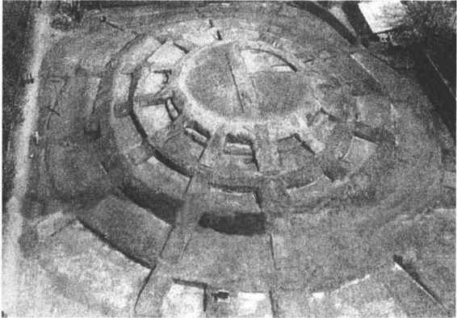
图4-5 西安唐代圜丘遗址
宋代圜丘合祀天地后，要在皇城门楼上举行特赦仪式，赦免囚徒；改日，要到景灵宫祖宗神像前行“恭谢礼”。
辽代祭天礼与祭山礼同时举行，在祭祀契丹族先祖所居住的木叶山（今辽宁西北老哈河与西拉木伦河交汇处）时，设天神、地祇之位。金初每年五月初五、七月十五、九月九日行拜天礼。金世宗大定后才有较完备的南郊圜丘祀天之礼。
元初有蒙古民族的拜天礼。宪宗时曾在日月山拜天，且合祭昊天后土。元世祖忽必烈至元时才在大都（今北京）丽正门东南七里处建祭天台。成宗大德时建圜丘，南郊祀天。
洪武十年（1377）改变圜丘礼制，定每年孟春正月合祀天地于南郊，建大祀殿，以圜形大屋覆盖祭坛。明成祖迁都北京后，在正阳门南按南京规制营建大祀殿，于永乐十八年（1420）建成，合祀天地。嘉靖九年（1530），世宗改变天地合祀制度，在大祀殿之南另建圜丘。
清代基本沿袭明制。世祖（顺治）定都北京后即恢复修建正阳门南天坛各种配套建筑，后经乾隆时改修，成为今天所见到的天坛古建筑群。它包括圜丘、大享殿、皇穹宇、皇极殿、斋宫、井亭、宰牲亭等。清人祭天除采用汉制外，还保留了本民族入关前“谒庙”之礼，入关后改称“祭堂子”。
（1）祈谷。《礼记·月令》说，孟春之月，“天子乃以元日祈谷于上帝”。郑玄认为，这就是“上辛郊祭天”，即正月的第一个辛日在南郊祭天。信从郑说者就以为这一天为郊祀日。两汉迄于魏晋，多于正月南郊祭天，就是将圜丘、祈谷混为一谈。梁武帝天监三年（504），确认祈谷与祀天是两回事，但实际的祭祀活动并没有加以区分。唐高宗显庆二年（657）及玄宗开元二十年（732）所定礼制都有祈谷礼，仪式与圜丘祀天大致相同。明初无祈谷之祭，嘉靖十年（1531），定孟春上辛在大祀殿行祈谷礼。后祈谷之祭改在惊蛰之日举行，礼仪规格略小于大祀，不设从祀坛位，不行燔柴。清祈谷礼仿明制，乾隆时，将大享殿更名为祈年殿，以合祈谷之义。（图4—6）
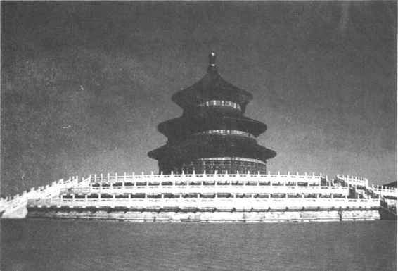
图4-6 北京天坛祈年殿
（2）大雩。这是求雨之祭。在无旱灾发生时是例行之祭，于仲夏举行；在大旱发生时则无论夏秋，随时举行。隋唐时，孟夏之月在圜丘行雩礼，如遇旱灾，则另有祈太庙、祈太社、祈五岳山川海渎于北郊等祭礼。如久雨，则禜祭于国门。宋代，例行的雩祭在圜丘之左雩坛举行，遇干旱别有祈雨、祷雨种种祭仪。金、元无雩礼，遇干旱祷雨于宗庙、社稷，或在北郊望祭岳镇海渎。明嘉靖时在圜丘坛外泰元门东侧建雩坛，行大雩礼。清代在圜丘雩祀祷雨。乾隆后设例行的常雩之祭，遇干旱则大雩行礼。常雩初在立夏，嘉庆后改在立夏后择吉日举行。
（3）明堂。《礼记·月令》说它是季秋之月大享天帝的地方，大享是报答天帝的恩佑，把收获的新谷及牲畜进献给天帝。一说明堂是祭祀祖宗或者是天子布政的地方；也有人认为明堂、太庙、灵台、辟雍、路寝等都是一回事，名异而实同（图4—7）。
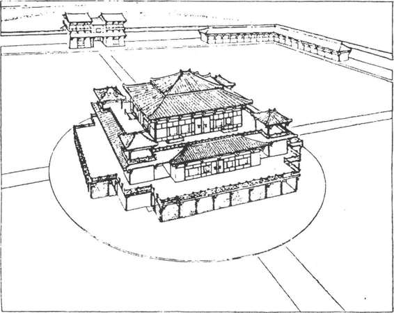
图4-7 汉长安明堂辟雍中心建筑复原图
汉代，汉武帝始建明堂。平帝元始四年（公元4年），王莽在长安城南建造了明堂、辟雍等。这个建筑遗址已经发掘，它比较集中地反映了西汉末年礼学家对明堂的认识。由于对明堂制度争议太大，南北朝时明堂祭祀就各行其是了；而隋朝直到灭亡都没有就明堂的构建争吵出个结果来。唐代武则天掌权后在东都洛阳毁乾元殿兴建明堂，垂拱四年（688）建成，是一个三层的圆亭形建筑，武后下令改称“万象神宫”，多次在这里举行祭祀天地的典礼。几年后被一场大火烧掉，武后又下令重建，号称“通天宫”，建成后，武后改元“万岁通天”，以示庆贺。武氏举行大享礼，受群臣朝贺，并于四时孟月及季夏行告朔之礼。中宗神龙元年（705），也在明堂行大享礼，合祭天地；次年返西京，才改为季秋在圜丘大享行礼。玄宗开元时，东都明堂恢复乾元殿旧名，并拆除上层，缩小规模。玄宗到洛阳，常于元旦、冬至在此殿受朝贺。北宋仁宗时以大庆殿为明堂。南宋初，明堂祭祀规模小，只祭天地祖宗四位，绍兴四年（1134）起才逐渐增设从祀神位；十年（1140）制定明堂仪注，大致同郊祀礼。明初无明堂之制，季秋大享礼在南郊大祀殿举行。嘉靖时始议明堂之礼，先将原来的道士之宫元极宝殿充作明堂，行大享之礼；后又在大祀殿旧址改建大享殿。清初沿用明制，正月上辛在大享殿合祀天地，并以祖宗配祀，认为大享合祀之礼即是明堂制度。乾隆十六年（1751），改大享殿为祈年殿，专行祈谷之礼，而大享为季秋报祀，把两种祀典区别开来，改正了大享殿即明堂的旧认识。
《周礼·春官·小宗伯》有“兆五帝于四郊”的说法，“兆”就是设坛而祭；《礼记·月令》将一年四季与五人帝、五人神、五方相配，在立春、立夏、立秋、立冬之日有迎气祭五帝的礼仪。五帝之祭各依方位与颜色，就连祭器、祭品也要与之一一相应。
史书记载祭祀五帝，见于春秋初期的秦国。秦襄公作为周天子诸侯居于西陲，因西方为少皞之神所主，便作西峙（祭坛），祭白帝。后来，随着秦的国力增强，又先后建造了祭祀青帝的密畤，祭祀黄帝的上畤，祭祀炎帝的下畤。秦始皇统一中国后，仍保留着对这四畤的祭祀，每次用驹四匹，木偶栾车一驷，木偶车马一驷，各按方位变更颜色，瘗埋为祭，不用俎豆等祭品。汉高祖二年（前205），又增建北畤，祭祀黑帝。汉文帝时，在渭阳修了五帝庙，由皇帝亲祭，这是五帝的正祭。五时迎气之祭，都在郊外举行，所以也称为“五郊”。西汉平帝元始时已有迎气之礼。东汉永平二年（59年），重定礼制，后代基本沿用。立春之日，迎春于东郊，祭青帝句芒；立夏之日，迎夏于南郊，祭赤帝祝融；立秋前十八日，迎黄灵于邑旁中央之地，祭黄帝后土；立秋之日，迎秋于西郊，祭白帝蓐收；立冬之日，迎冬于北郊，祭黑帝玄冥。这是皇家迎气之礼。地方郡县只行迎春礼。后来，又有在城外塑造青色土牛两头，并塑有耕夫、犁具的习俗，迎春礼就在青牛旁举行。后世年画常有“春牛图”，即源于此。明太祖只祀昊天上帝，从祀之位不列五帝，也不举行五时迎气之礼。只有迎春出土牛，还保留了五郊之礼的部分内容。清代沿用明制，也没有五帝之祭。
相传古代帝王祭日于坛，祭月于坎（一说月坛）。日坛称为“王宫”，也称“大明”，月坛称为“夜明”；祭日在春分之朝，祭月在秋分之夕；祭日于东，祭月于西，这是日月的正祭。另外，郊祀天地常以日月从祀；诸侯觐见天子之礼要到南门拜日，北门拜月；祈年、禜祭等也都要祭日月。
秦始皇东游海上祭祀八神，祭日于成山（今山东成山角），祭月于莱山（今山东掖县一带）。其在雍城（今陕西凤翔南）则另有日月祠举行祭祀。汉初，诸多的神祠中有“东君祠”，祭的就是日神。武帝时在太一坛祭日月，黎明之时皇帝走出用竹子建造的祠宫——竹宫，向东方拜揖行礼；夜晚向西方拜揖行礼，即“朝日”、“夕月”之礼。尔后，懒散从简，就在宫殿的庭院中行祭。平帝时，王莽改祭礼，仍在合祭天地之日，黎明东向拜日行“朝日”礼，夜晚西向拜月行“夕月”礼。至魏晋南北朝时，才逐渐确定为春分东郊朝日，秋分西郊夕月的礼仪。唐以后祭日月礼仪与圜丘祀天相似，但一般规格为中祀，偶然也有作为大祀的。明初在南京建日月祭坛，迁都后在北京朝阳门外建日坛，在阜成门外建月坛。每逢天干为甲、丙、戊、庚、壬之年，皇帝亲自祭日，余则由文臣代祀。每逢地支为丑、辰、未、戌之年时，皇帝亲自祭月，余则皆由武臣代祀。清代朝日、夕月之礼与明制相同。今日坛、月坛旧址仍在，为光绪年间改建。
星辰之祭主要祭五星、二十八宿。五星是东方岁星，南方荧惑，西方太白，北方辰星，中央镇（填）星；二十八星宿是东方苍龙七宿：角、亢、氐、房、心、尾、箕；北方玄武七宿：斗、牛、女、虚、危、室、壁；西方白虎七宿：奎、娄、胃、昴、毕、觜、参；南方朱雀七宿：井、鬼、柳、星、张、翼、轸。祭星也泛指众多的星象之神，祭祀天地时从祀的星神数以百计，较大的有《周礼》所说的司命、司中、司民、司禄。注释家说司命主老幼，司中主灾咎，司民主户口，司禄主赏功。
秦时雍城有许多祭祀星辰的庙。《史记·封禅书》载有参、辰、南北斗、荧惑、太白、岁星、填星、二十八宿及许多不见名数所出的小神，“百有余庙”。又有寿星祠，祭南极老人星，主福寿。汉高祖时又下令在全国设灵星祠，传说是主稼穑农事之神。隋代定星辰之祭为中祀，祭司中、司命及诸星为小祀；在国都西北郊还有祭祀司中、司命、司禄的坛位，于立冬后的亥日行祭礼。唐因隋制，并在立秋后辰日祀灵星；玄宗时又设寿星坛祭老人星等。元世祖至元五年（1268）下令每年二分（春分、秋分）、二至（夏至、冬至）在司天台祭星。明洪武四年（1371），为祭祀周天星辰特辟专殿，设十坛，祭仪如朝日仪。
上古时，人们又把天上的星宿同地上的州、国疆域相互联系，说某星是某某州国的分野，这个地域或国家就要祭祀相应的分野之星。
属于星辰之祀的还有一些其他名目的神，这里择要简介如下：
（1）风师、雨师。《周礼》郑玄注说箕星为风师，毕星为雨师。但异说很多，在屈原赋里，风伯叫飞廉；《左传》说雨师是共工之子玄冥，还有屏翳为雨师的说法。风师、雨师，自秦汉到明清，除大祭天地为从祀外，都单独有祠庙。汉代起还祭祀云神、雷公（神）等，通常为小祀，偶有列为中祀的。
（2）太岁月将。太岁本是古人设想的一颗与岁星运行方向相反的星，星占术士认为它的方位与战争胜负、土木兴建、谷物收获丰歉有很大关系。但周秦到宋历朝都没有祭祀太岁的记载，最早祭太岁的是元朝。尔后，明、清两代沿袭其制。
元朝祭太岁，始于元至元三十一年（1294），成宗即位后，在司天台与太阳、火星、土星等同祭。明嘉靖时，别建太岁坛（仍在天坛之西、先农坛东北、山川坛内）。
远古时已有对土地的崇拜，大地生长五谷，养育万物，犹如慈爱的母亲，因此，古代有“父天而母地”的说法。古文献记载土地神是“社”，祭礼叫“宜”。在殷商甲骨文里已有对社土的祭祀，还有大量祭祀山岳河流的记录，主要目的是祈求农作物的丰收。地神，称为“地示”，又作“地祇”，但古籍中常常讹作“祗”字。“社”，通常是主某一片土地之神。所以《礼记·王制》有“天子祭天地，诸侯祭社稷”的说法。另外，阴阳家说，地中央曰昆仑，统辖四方大九州；神州是九州之一，下又分小九州，即中国的九州。汉代经学家也有分地神为昆仑之神与神州之神的说法。
祭地的正祭，是每年夏至之日在国都北郊水泽之中的方丘上举行的祭典。水泽，即以水环绕；方丘，指方形祭坛，古人认为地属阴而静，本为方形。水泽、方丘，象征四海环绕大地。祭地礼仪与祭天大致相近，但不燔燎而用瘗埋，即祭后挖坎穴将牺牲等祭品埋入土中。祭地用的牺牲取黝黑之色，用玉为黄琮，黄色象土，琮为方形象地。（图4—8）
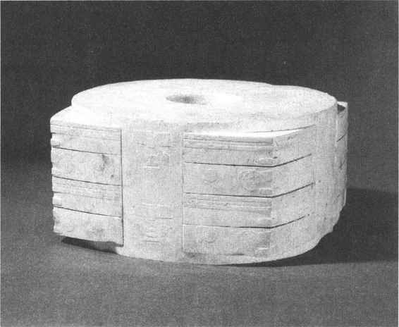
图4-8 浙江余杭反山出土良渚文化玉琮王
秦时未见有方丘祭地之礼。秦始皇即帝位后所祠八神有“地主”，祭的是泰山梁父。汉高祖时有专祠祠地。武帝元鼎四年（前113），提出要祭祀后土，于是，在河东汾阴（今山西万荣县西南）建后土祠，祭祀后土。平帝时，王莽改为孟春正月合祀天地于南郊，天子亲祀。夏至北郊祭地祇，称皇地后祇，遣礼官奉祭。后土坛为方坛，从祀有山川河流地理群神。后汉沿用其制，同时仍保留了汾阴后土祠的祭礼。曹魏明帝时，方丘祭地与北郊祀地，也与祭天一样一分为二，方丘所祭曰皇皇后地，北郊所祭曰皇地之祇。晋武帝时才合二而一。
南北朝时，南朝各国多在北郊祭地，而北朝各国方泽祭地时也有同祭昆仑地祇、神州之神的。
隋开皇初于宫城之北建方丘，夏至之日祭皇地祇，孟冬则在北郊祭祀神州之神。唐初沿用隋制。唐太宗贞观时，规定只祭皇地祇及神州。高宗永徽时又废去神州之祀。武后于南郊合祀天地。《开元礼》定夏至日方丘祭地之仪，仍以神州地祇从祀；孟冬祀神州地祇。宋代祭地大致同《开元礼》，由于天地祭祀分合之争十分激烈，祀典也因而常有变动。
明初于钟山之北建方丘坛。洪武二年（1396）夏至，明太祖亲至方丘祭祀皇地祇。嘉靖时，在北京安定门外建方丘，即地坛，并建造皇地祇室，用以收藏皇地祇及从祀众神木主，每岁夏至祭祀。
清代沿用明制，安定门外方泽水渠中设坛，坛二层，地坛之南有皇祇室，坛外又有南北瘗坎各二，还有神库及神厨、祭器等库及井亭、宰牲亭、斋宫等配套建筑。
“四望”是望祭天下名山大川之神。同一山川，至其地而祭之，称为祭；远望而祭之，则名曰“望”。
望祭也在国都四郊举行，四方各建一坛，以望祀一方的名山大川，祭品用牲要与各方之色相合。正祭之外，国家如有军事行动，也要预先进行望祭。称为“前祝”；战争获胜后，燔柴以望，称为“告成”。国家如果有凶灾变异，也要进行望祭，天子向受灾方向行礼祷告，祈求神祇的佑护。
秦祭山川，设专祠祭名山大川。春、秋两季，解冻、封冻时两次祭祀；冬季则举行“赛祷”之祠。汉高祖分封建国，各诸侯各自奉祠境内名山大川。到武帝时，将五岳之祭的权利，“收归”天子所有。汉武帝用13年时间周游五岳四渎，一一行祭。宣帝神爵元年（前61年），诏令建祠祀五岳、四渎，派遣使者前往祭祀。西汉末及东汉，合祀天地于圜丘，五岳、四海、四渎，名山大川皆有神位在其上。魏、晋之际，山川祭祀时兴时废，南北割据后，名山大川各在一方，各国各奉其祀。
隋开皇中，文帝诏令祭祀“四镇”，即东镇沂山，南镇会稽山，北镇医无闾山，冀州镇（中镇）霍山。以后，又以吴山为西镇，成为“五镇”。
唐代五岳、四渎、四海、四镇（当时不祭中镇霍山），每年一祭，各自于五郊迎气之日祭祀。武则天时，封洛水之神为显圣侯，改嵩山为神岳，封山神为天中王太师、使持节大都督。山川之神而以人爵为封号，始于此时，后来，西岳被封为金天王，东岳被封为天齐王，中岳被封为中天王，南岳被封为司天王，北岳被封为安天王。唐玄宗时，又封河渎为灵源公，济渎为清源公，江渎为广源公，淮渎为长源公，九州镇山也都封为公。昭宗时，又封洞庭等湖泊为侯。宋代更为五岳加上帝号，并配有帝后，也有封号；四海、四渎、四镇皆加封为王。
辽代祭祀木叶山与辽河神。金人则祭长白山，初封为兴国灵应王，继而加封为开国弘道圣帝。元代世祖中统后，遣使祀岳、镇、海、渎19处，分为东西南北中五道，各遣汉官、蒙古官一人，前往祭祀。
明代南京、北京皆有山川坛。洪武三年（1370），太祖下令废去前代所封岳、镇、海、渎名号，只以山水本名名其神，如“东岳泰山之神”、“南镇会稽山之神”、“西渎大河之神”、“北海之神”等。嘉靖时，改山川坛为天地神祇坛，地祇分五坛：五岳、五镇、五陵（祖宗陵墓山）、四海、四渎，并以京畿及天下山川从祀。
清初设山川海渎配享方泽之祭，又建有地祇坛，位于天坛之西，兼祀名山大川。五岳、五镇、四海、四渎，皆依时遣使前往祭祀。另外，又封努尔哈赤、皇太极等祖先陵墓所在之山及长白山等，按时祭祀。
“封禅”，专指在泰山的天地祭祀。《史记·封禅书》正义曰：“此泰山上筑土为坛以祭天，报天之功，故曰封。此泰山下小山上除地，报地之功，故曰禅。”这就是“封泰山”，“禅梁父”（梁父是泰山下一座小山）。相传远古在泰山举行封禅典礼的有72家。历代好大喜功的帝王多将封禅作为一代盛典，给予特别的重视。
史书所记封禅，可靠的是秦始皇二十九年（前218）的泰山封禅。秦始皇修建车道，从山南登顶，立石纪功；又从北路下山，禅于梁父。
汉武帝元封时也到泰山行封禅礼，他深信方士之言，希望在泰山之巅与黄帝神仙相见，学习升天成仙之术。当时儒生们谁也讲不清封禅礼仪，武帝便自订仪式。先到梁父，祭祀地主。礼毕，武帝与侍中等登山顶，山顶也筑一土封，下圆上方，上建方石。
其后行封禅礼的帝王有后汉光武帝、唐高宗、唐玄宗与宋真宗。（图4—9）唐高宗封禅泰山，从驾文武大臣、兵士、仪仗队伍长达数百里，包括波斯、天竺、倭国（日本）、新罗、百济、高丽等国使者，穹庐毡帐，牛马驼羊，充塞道路。十月从长安出发，十二月方到达，于是改元“乾封”，正月行封禅礼。如此兴师动众，其对沿途人民的骚扰、对生产的影响可想而知。
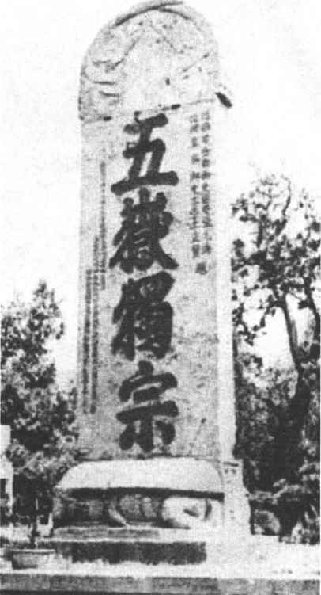
图4-9 宋真宗封禅碑
《周礼·春官·小宗伯》说：“建国之神位，右社稷，左宗庙。”社是土神，稷是谷神。建国以社稷为先，于是“社稷”也成为国家的代称。
祭祀社稷神在社稷坛。本来，社坛与稷坛是分立的，后来合而为一了。相传共工氏之子名勾龙，能平水土，被称为“后土”，即社神；厉山氏之子名农（一说名“柱”），能播殖百谷，被当做稷神。商汤灭夏，以周人的始祖弃（后稷）为稷神。礼经说，天子有天子之社，诸侯有诸侯之社，大夫有大夫之社，庶民有庶民之社，等级、规格各不相同。天子为天下群姓而立的社叫太社，天子自立之社叫帝社或王社。诸侯为百姓而立的社叫国社，诸侯自立之社叫侯社。大夫以下，以宗姓聚居而立社，大小也各自不同，或有州社，或有里社。
社坛上树立着一个象征神位的“主”，或称“田主”。相传远古氏族各有崇拜的树木，即所谓“社树”，夏后氏用松树，殷人用柏树，周人用栗树。后规定用当地具有代表性的树木作“社主”，继而演变成一块木制的牌位。也有一些地方、一些时候采用石制的“社主”。
祭祀社稷神，最切近功利的目的是祈谷，因此有“春祈秋报”之祭。春祈在社日（仲春之月吉日）举行，秋报在秋收后（孟冬之月吉日）举行，这是社稷的正祭。汉高祖起义反秦，曾在丰县枌榆社祈祷，此乃乡里之社。汉代国家立有太社、太稷，各县立有“公社”，每年春二月及腊两次祭祀。平帝元始时，王莽言官社之外，应有官稷，以夏禹配食官社，后稷配食官稷。后汉时合祭社稷。建武二年（26年），在洛阳建太社稷，方坛，用五色土，每年二月、八月及腊一岁三祠。
唐代将“籍田坛”看做是帝社，武后改为“先农坛”，祭祀神农。唐以后，社稷坛制度逐渐稳定下来。天子太社，用五色土，社主用石条制作。只有元代社坛不用五色土，全用黄土。明太祖又将社、稷合为一坛，建制与前朝社坛不同，但社主只微露其尖，另用木制神牌，分建太社、太稷神位。明永乐后及清代，社稷坛都在北京紫禁城端门之右（今中山公园内），每岁春秋二季仲月上戊日举行祭祀，由皇帝亲祭。（图4—10）地方府、州、县各有社、稷，亦在同时祭祀，由地方官主祭。
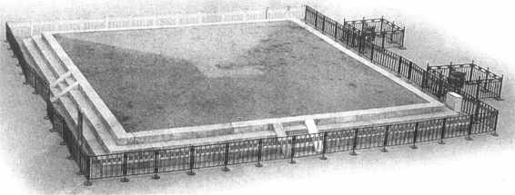
图4-10 北京中山公园内的社稷坛
宗庙的设置，与宗法制度密切相关，本章重点介绍祭祀祖先礼仪的沿革。古人认为，人死而为鬼，没有宗庙供奉享祀，鬼便没有归宿，宗庙正是祖先亡灵寄居之所。
在殷商甲骨文中，对祖先的祭祀已有较完整的制度。通过对甲骨文资料的研究现已可描述其概况。后代宗庙祭祀所沿用的制度，基本上还是周代礼制。
周人宗庙制度，一般认为：天子七庙，三昭三穆，与太祖之庙合而为七。所谓昭、穆，是指宗庙中位次的排列，自始祖以下，父曰昭，子曰穆，按照世次递邅排列下去。诸侯五庙，二昭二穆，与太祖之庙合而为五。大夫三庙，士一庙。《礼记·祭法》则说，王立七庙一坛一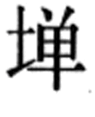（祭场），即考（父）庙、王考（祖父）庙、皇考（曾祖父）庙、显考庙、祖考庙，另有远祖之庙二，称为“二祧”。诸侯立五庙，一坛一，即考庙、王考庙、皇考庙、显考庙、祖考庙。大夫立三庙二坛，即考庙、王考庙、皇考庙。上士立二庙一坛，即考庙、王考庙；中士、下士一庙，即考庙；庶士、庶人无庙。汉代经学家刘歆认为，周人宗庙自始祖稷以下有文王、武王两宗没有列入七庙的数目中，他们的庙称为“世室”，因此实为九庙。后代不少学者赞同此说。不过，“七庙”也好，“九庙”也好，随着世代延续，总是不够的。对于渐渐远去的“亲尽”之庙，礼仪规定有“毁庙”制度。即除始祖之外，不在“七庙”之数的远祖宗庙平时都不再加以祭祀，神主移入“祧庙”内，藏在石函或专设的房间里，每当袷祭时才拿出来。袷祭就是合祭，把远近祖先的神主集中在一起进行总祭，三年一祭。
古时宗庙，天子、诸侯皆建于宫廷中门左侧，大夫则左庙而右寝。宗庙四周有墙垣，又称“都宫”。都宫之内，诸庙都南向，昭庙在左，穆庙在右，依世排次。祭祀时要卜筮选尸。尸是死去的先祖的代表。《通典·礼八》引《白虎通》佚文说：“祭所以有尸者，鬼神听之无声，视之无形，升自阼阶，仰视榱桷，俯视几筵，其器存，其人亡，虚无寂寞，思慕哀伤，无所写泄，故座尸而食之，毁损其馔，欣然若亲之饱，尸醉若神之醉矣。”尸一般由孙辈小儿充任，祭男用男尸，祭女用女尸，也有祭夫妇共一尸，以妇人祔从于其夫的。庙中的神主，木制，为长方体。通常用桑、栗等木制作，平时放在“柘”中。“柘”是收藏神主的石函，祭祀时才拿出来。后代木主演变为神位版。宗庙祭祀用的鼎、彝、尊、觚等礼器，都是国家重宝，“宗彝”成为国家的象征，必须妥为保藏，所谓“祭器不逾境”。“迁鼎”——国家的祭器被迁走了，表示一个国家被灭亡了。对于一个家庭来说，祭器也至为重要，“君子虽贫不鬻祭器，虽寒不衣祭服”［15］，就是这个道理。祭祀使用鼎彝礼器有一定之规。用于祭祀的牺牲与物品，都有代称，祭祀时不得直呼其名。（图4—11）
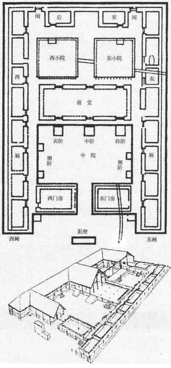
图4-11 陕西周原凤雏村西周宫室复原图（推测为宗庙）
周人宗庙祭享之礼，先有修除、择士、卜日、斋戒等准备工作。祭日入庙后先到太室行裸礼，用圭瓒舀一种叫郁鬯的香酒灌地，使香气到达地下，以告知鬼神降临受祭。祭祀用的食物，行礼后分而食之，称为“馂”，即食鬼神所食之余的意思。牲肉（生曰脤，熟曰膰）分给参加祭祀的宾客或颁赐给同姓诸侯。
天子、诸侯宗庙的正祭，春曰祠，夏曰杓（或作禴），秋曰尝，冬曰烝，在四季的孟月举行，加上腊祭，每岁共五祀。袷祭是在太祖之庙合祭祖先。当三年之丧毕，先祖神主将依次迁出一辈，这时举行袷祭。明年举行禘祭。禘祭是三年或五年一次的大祭。正祭之外，又有“荐新”之祭，即按照时令节序，将当令的新鲜果蔬品物奉享于宗庙。
古代行礼有“九拜”。《周礼·春官·太祝》：“辨九拜，一曰稽首，二曰顿首，三曰空首，四曰振动，五曰吉拜，六曰凶拜，七曰奇拜，八曰褒拜，九曰肃拜，以享右祭祀。”当然，祭祀并不是“九拜”并用，而是根据情况，用其中的一种。稽首是跪下后，两手着地，拜头至地，停留一段时间，是拜礼中最重者。顿首是引头至地，稍顿即起，是拜礼中次重者。空首是两手拱地，引头至手而不着地，是拜礼中较轻者。这三拜是正拜。振动，是两手相击，振动其身而拜。吉拜，是先拜而后稽颡，即将额头触地。凶拜，是先稽颡而后再拜，须表情严肃。奇拜，先屈一膝而拜，又称“雅拜”。褒拜，是行拜礼后为回报他人行礼的再拜，也称“报拜”。肃拜，是拱手礼，并不下跪，俯身拱身行礼。推手为揖，引手为肃。其实也就是揖。这是军礼，军人身披甲胄，不便跪拜，所以引用肃拜。其他几种拜礼都是正拜的变通。
宗庙祭祀拜祖先，郊祀拜天拜神，以及臣拜君，子拜父，学生拜老师，新婚夫妇拜天地、拜父母，都行稽首礼。平辈同级之间，拜迎拜送，拜望，拜谒，行顿首礼。对于卑者的稽首礼，尊者以空首礼答拜。吉拜礼行于各种祠祭，凶拜礼是服三年之丧时所行的礼。上古时席地屈膝而坐，跪拜行礼不像后来那样繁缛复杂，对此应有历史的观点。
秦代遵用天子七庙制度，宗庙在雍城、咸阳一带。秦始皇死后，胡亥尊始皇庙为帝者祖庙。
汉初于长安立宗庙，但当时各诸侯王国也都立有祖宗之庙，直到元帝时才下令废去。汉高祖死后，有每月出游高祖衣冠的礼仪，在高庙之外又别建“原庙”，收藏高祖衣冠、车驾。宗庙之外，汉代帝王陵墓旁都建有寝殿，仿其生前起居闲宴之所，这一制度为后代沿用。西汉末，赤眉军攻入长安，焚毁汉家宫殿宗庙。光武帝徙都洛阳后，乃将西汉帝王12陵合入高庙，作12室。刘秀死后，明帝为他立了世祖庙。明帝临终遗诏，不准为他建立寝庙。他死后，庙主藏于世祖庙别室内。其后，古礼为之一变，独立的昭穆之庙变为“同堂异室”之制，即在一庙之内依世次别为若干室加以祭享。宗庙正祭为四时孟月及腊，一岁五祭，后代基本上沿袭了东汉制度。
北宋起，宗庙祭祀时挂有先祖的“御容”（画像），而后又有塑像、金像、玉石像等。宋神宗元丰五年（1082），建景灵宫11殿，将原在各寺观供奉的祖先“神御”，全都迎入宫中。并合以帝后画像，按时荐享祭奠。有人认为，这是汉代“原庙”制度的演变。景灵宫后来不断扩建，至北宋末年已有斋宫廊庑2300余区，历朝文臣执政官、武臣节度使以上都绘有图像陪祀。辽、金制度与宋相似。在金都衍庆宫中，金太祖画像有12幅之多，包括立像、坐像、戎装像、半身像等等。元代供奉先祖的宫殿“神御殿”，亦称“影堂”，画像由“纹绮局”织锦而成，祭仪采用汉制，但仍由蒙古巫祝致辞。武宗至大时，宗庙神主曾改用纯金制作，结果成为盗窃的绝好目标，三十余年间三次严重失盗。
明初有南、北二庙。嘉靖十三年（1534），南京太庙因火灾被毁，便不再恢复，只将遗址筑墙封闭。北京太庙在紫禁城端门之左（今劳动人民文化宫内）。嘉靖时曾改用古制，分立九庙。刚刚建好就被一场大火烧毁八庙，只好仍旧采用同堂异室庙制。
清代盛京（今辽宁沈阳）太庙为四祖庙，祭祀始祖泽王以下四先祖。北京太庙仍在端门之左侧，前殿供奉太祖太后神龛，中殿供奉列圣列后，后殿供奉祧庙神龛，两庑东侧为诸王，西侧为功臣。（图4—12）每年清明、除夕、诞辰、忌辰、中元（七月十五日）及四孟月祭祀，每月则有荐新之祭。除夕为祫祭，将后殿、中殿神主全部移入前殿，皇帝亲率皇子、亲王行三跪九叩之礼。
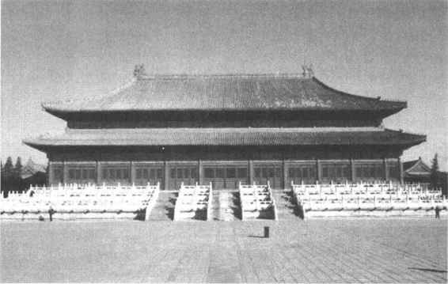
图4-12 北京清代太庙
如前所述，大夫、士立庙依次递减，庶士、庶人不得立庙，这是宗法制度严格规定的。大夫、士、庶祭祀祖先的礼制，大体上经历了三个阶段。第一个阶段，是礼经规定的制度，大约是周制，主要内容有：
（1）继祢（父死入庙称祢）小宗只立祢庙，继祖小宗只立祖、祢二庙，继高祖小宗立高祖以下四庙，继别大宗则立始祖、高祖、曾祖、祖、祢五庙。“别”，指别子，王族庶子称为别子，不得继承王位，别立为宗，叫做“别子为祖”。这里还都是可以立庙的宗子。
（2）宗子之外的支子，不得立庙主，只能助祭于宗子之家。一家之中嫡长子及继承先祖之子为宗子，其他子弟皆为支子。支子如要进行祭祀活动，必须得到宗子允许。如宗子因故离国去家，由支子代为祭祀，则祭礼规格较为简略，不荐俎，不为主人致嘏辞。
（3）庶子无爵则望墓为坛而祭。
（4）宗子可以有厌祭，即对殇者（未成年而死）的祭祀，庶子不得祭祀殇者与无后者（没有后人），殇者与无后者只能从祖庙祔祭而已。
在周代，贵族中的大宗继承了王位或封国，而小宗、支子只能充任大夫、士，或者降为庶人。宗庙祭祀十分集中地表现出宗法制度的等级差别和尊卑次第。
第二个阶段是周礼的变通和改造，私庙制度逐渐完善。汉初公卿贵人多在茔墓地建立祠堂，而不在都邑立私庙。这时旧的宗庙祭祀的规定随着社会的动荡、变革而土崩瓦解。随着职官制度的不断完善，到南北朝时已开始按照官职品秩高下确定庙祭的礼仪。如后齐规定，诸王及从二品以上官员祀五世；正三品以下，从五品以上祀三世；正六品以下，从七品以上祀二世；正八品以下至庶人祭于寝。唐代规定，一品、二品四庙；加始封之祖共五庙。三品三庙；四品、五品有兼爵者立三庙，六品以下至庶人祭于寝。清代规定，亲王、世子、郡王建家庙七楹（犹七室），贝勒、贝子、宗室公家建家庙五楹；品官则一品至三品建家庙五楹，四品至七品与八、九品皆三楹，但广狭格局不同；庶人在正寝设龛而祭。显而易见，这是改朝换代后新权贵按照自己的意志对宗法制度所作出了相应的变动。
第三个阶段是宗族祠堂制度的出现，大致始于南宋。《朱子家礼》说：“古之庙制不见于经，且今士、庶人之贱，亦有不得为者，故特以祠堂名之而其制度亦多用俗礼云。”祠堂分四龛，奉高、曾、祖、考四代神主，以西为上。龛前各设供桌，置香炉、香盒之类。四时祭祀，卜吉而行。祭仪有参拜、降神、进馔、三献、受胙等礼。祠堂制是对旧有的宗法制度的补充。一方面，它反映了平民的社会地位的提高；另一方面，它也说明人民被更牢固地束缚在封建制度之下。
我国古代祭祀项目甚多，各种神鬼难计其数，这里只能将历朝列入国家祀典的比较重要的祭祀择要作些简介。
《礼记·曲礼》说：“夫圣王之制祭祀也，法施于民则祀之，以死勤事则祀之，以劳定国则祀之，能御大灾则祀之，能捍大患则祀之。”对于“有功烈于民”的先代帝王，如帝喾、尧、禹、黄帝、颛顼、契、冥、汤、文王、武王等，都要举行崇祀。后来，受祭享的先代帝王人数越来越多。
秦始皇在巡游天下、经过名山大川时，曾经祭祀先代帝王。他到云梦，望祀虞舜于九嶷山，因为相传虞舜死后葬于九嶷。他到会稽，会稽有大禹陵墓，于是祭祀大禹。后来历代帝王出巡，多仿效秦皇，祭祀先王。自汉代起，开始为先代帝王维修或营建陵园，分别立祠祭祀。光武帝时，皇宫中有古代圣贤帝、后画像，不过那大概还不是用于祭奠行礼的。
隋代以祭祀先代帝王为常祀。在京城立有三皇五帝庙，另立庙祭祀三皇以前诸帝，并且在先代帝王始创基业的肇迹之地分别建置庙宇，以时祭祀。明洪武六年（1373），太祖始创在京都总立历代帝王庙。嘉靖时，在北京阜成门内建历代帝王庙，祭祀先王36帝，择历朝名臣能始终保守节义者从祀。清代沿用此庙，初祀三皇、五帝等。后又改变原则，“凡为天下主，除亡国暨无道被弑，悉当庙祀”［16］。对于先代帝王的陵寝，清代祀典规定祭祀三皇、五帝以下数十处，春、秋二季仲月致祭，或在陵寝筑坛而祭，或在当地享殿行礼。凡皇帝巡游，途经先代帝王陵庙，皆有祭享之礼。清统治者特别对明代诸帝陵墓，更是优礼有加。这显然是出于缓和满汉民族矛盾、巩固其统治地位的政治需要。
祭祀先圣先师是立学之礼，礼经并未实举其人。汉魏以后，逐渐确定以周公为先圣，孔子为先师；或者以孔子为先圣，颜回为先师。唐代确定孔子为先圣，颜回为先师，从此以后不再变更。对于孔、颜，历代帝王益封爵，赠谥号，直至用天子之礼乐优加尊崇，祭祀典礼极为隆重。
《礼记》所载立学祀典，不过“释奠”、“释币”、“释菜”三项。“释币”，即有事之前的告祭，以币（帛）奠享，这不是常行之礼。“释奠”，是设荐俎馔酌而祭，有音乐而没有尸。“释菜”，是以菜蔬设祭，为始立学堂或学子入学的礼仪。唐、宋以后一般只用“释奠”礼，既作为学礼，也是祭孔礼，仪式则日趋繁复。
祭孔始于汉高祖十二年（前195），但当时孔子的地位并不高；汉平帝才追谥孔子为褒成宣尼公。学校祀先圣先师周公、孔子，始于东汉明帝永平二年（59年）。南北朝时，太学内已立有宣尼庙，祭祀时设轩悬之乐，用六佾之舞，牲牢器具，依上公之例，每年春、秋二仲月，行释奠之礼；每月初一，国子祭酒率博士以下及学生拜孔揖颜。各地郡学也都立有孔、颜之庙。唐宋以后孔子封爵加至“大成至圣文宣王”，从祀弟子、贤人封为公、侯。元代世祖时虽有一时贬黜孔子及儒家的举动，但成宗即位后立刻恢复尊孔。直到明朝嘉靖时，世宗才废除所封孔子王号，取消了塑像，降低了原用天子之礼的规格，称为“至圣先师”。后金时期，盛京即建有孔庙。定都北京后，以京师国子监为太学，立文庙，孔子称“大成至圣宣先师”。祀礼规格又升为上祀，奠帛、读祝文、三献奠爵，行三跪九拜之礼。雍正四年（1726），又定八月二十七日为孔子诞辰，全体官民军士斋戒一日。在孔子故里（曲阜阙里），春、秋祭祀与太学相同，其庙制、祭器、乐器及礼仪都以北京太学为准式。（图4—13）
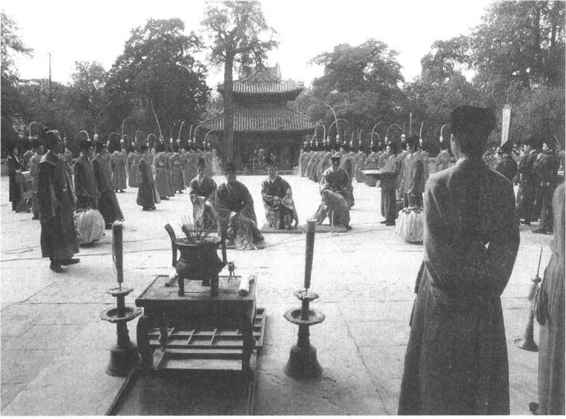
图4-13 延续至今的曲阜孔庙传统祭孔活动
祭孔礼仪在文庙举行。唐玄宗又为姜太公尚父立武庙，肃宗又追封姜太公为武成王，其祭祀礼仪与祭孔类似。至明初，由于明太祖的反对，武成庙才被废止。
宋代又有算学先师之祭。宋徽宗大观三年（1109）立黄帝为算学先师，但典仪规格较低。
《礼记》有“天子籍千亩”，“天子亲耕于南郊，以供斋盛”的记载。（《祭统》）耤或作“藉”、“籍”。耤礼，是祭祀农神，祈求丰收的礼仪。农神，也称“田祖”，又称为“先啬”，汉以后通称“先农”，认为就是教民耕作的神农氏。耤田在春天举行。
耤田礼为历代帝王所遵循，而且仪式日趋复杂。南北朝时，在先农坛北建御耕坛，围以青幕，供皇帝观看农夫耕种耤田情形之用。宋以后就直称“观耕台”。
明、清时的先农坛都在正阳门外，为一层方坛，东南方有观耕台，耤田时才加以陈设，附近又有神仓等建筑。今仍有若干古建筑保存。（彩图4）
耤田、祀先农是古礼孑遗，本有重农、劝耕的良好意愿，但历代帝王的亲耕耤田，做秀意味太重，难怪就连有的皇帝自己也说，耤田是“空有慕古之名，曾无供祀训农之实，而有百官车徒之费”［17］。（图4—14）
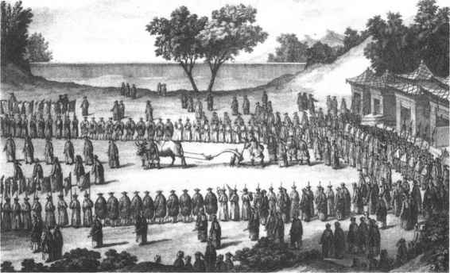
图4-14 清皇帝亲耕藉田仪式图
天子耤田，王后就去采桑养蚕。礼经有仲春“后率外内命妇始蚕于北郊”的记载，［18］亲桑、享先蚕之礼就是为这项活动而制定的。
史书记载，汉代已有此礼仪，皇后率领公、卿、列侯夫人到东郊苑中采桑，并以中牢羊、豕祭祀蚕神——苑窊妇人和寓氏公主。当时，宫中蚕室养蚕在千薄以上（薄是养蚕的竹帘），蚕丝由织室纺织，用作祭服。魏晋以后，亲桑礼与耤田亲耕礼比附，遂相应地建造了先蚕坛，又有皇后“采桑坛”。
明嘉靖十年（1531）在西苑（今北海公园）新建先蚕坛，废去北郊安定门外的旧坛。实际上，当时亲蚕礼只举行过几次，嘉靖十六年起干脆明令作罢。清代先蚕坛仍在西苑（今北海公园后门一带），并有观桑台、亲蚕殿、先蚕神殿等建筑，但皇后很少亲自莅临，常派嫔妃或官员代祀。
历代所祀蚕神各有不同。后齐曾祀黄帝轩辕氏为先蚕，后周又以黄帝之妃西陵氏为先蚕。西陵氏名嫘祖，后代民间养蚕，多祭嫘祖为蚕神。另有一说，房星天驷为先蚕。因此，祀先蚕也有祭天驷星的。
元成宗元贞元年（1295），将三皇定为先医，令天下郡县加以祭祀。明、清沿用其制，皆在皇宫内太医院设殿享祀。每年仲春上甲日由皇帝遣官或太医院正官主祭，全体医官陪祀。
五祀指祭祀门、户、井、灶、中霤，也有作户、灶、中霤、门、行的。五祀与五行、四季、五脏等搭配，春祀户；夏祀灶；季夏之月（六月）祀中霤，中霤即中室；秋祀门；冬祀行，行是道路之神，祭井也在冬季。汉魏时，都按季节行五祀，孟冬之月“腊五祀”，总祭一次。
唐、宋、元时又采用“天子七祀”之说，祀司命、中霤、国门、国行、泰厉、户、灶。这里的“司命”，不是星辰，而是宫中小神，相传主督察人的年寿、行为、善恶。泰厉是无人祭奠的野鬼，主杀害。明清两代仍祭五祀，岁终在太庙西庑下合祭。清康熙以后，罢去门、户、中霤、井的专祀，只在腊月二十三日祭灶。这就同民间长期流传的灶王爷（灶神）腊月二十四朝天言事的故事相合了。
高禖是乞子之祀。《礼记·月令》说，仲春之月“玄鸟至，至之日，以太牢祠于高禖，天子亲往”。玄鸟就是燕子。《诗·商颂·玄鸟》：“天命玄鸟，降而生商。”传说简狄吞鸟卵而生契，契是商民族的始祖。高禖是求子之祭，在玄鸟由南方北归之日举行，可能与此故事有关。一说高禖之神是女娲。清代学者王引之认为，“高”是“郊”的假借字，所以祭于郊外。看来，高禖是远古妇女乞求生育之祭的延续和发展。
高禖之祭，设坛于南郊，后妃率九嫔等参加。高禖之祭始见于《汉书·武五子传》。汉武帝年二十九始得太子（戾太子），乃“为立禖”。魏晋南北朝，各国皆有高禖之祭，但直至唐、宋时才依照礼经制定了礼仪。宋代高禖坛，以青帝为高禖，于春分之日行礼。金代高禖祀青帝，在皇城之东永安门北建木制方台，正位祭的是昊天上帝，台下才设高禖神位。
清代无“高禖”之祀，而有“佛立佛多鄂谟锡玛玛”之祭，又称“换索”，主要目的是保婴，司祝歌祷辞云：“聚九家之彩线，树柳枝以牵绳，举扬神箭，以祈福佑，以致敬诚。某年生小子，绥以多福。”［19］这是满族的传统习俗。
傩是驱除疾疫之礼，《周礼·夏官》有“方相氏”，蒙熊皮，以黄金为四目，着玄衣朱裳，执戈扬盾，率百隶而于季春、仲秋、季冬三时为傩礼，索室驱疫。东汉时，傩礼在腊日前一天举行，也称为逐疫。
蜡、腊本是两种祭祀，蜡祭百神，为报答一年来恩佑之功；腊，原写作“臘”，祭先祖、五祀。有人认为这是同日异祭；［20］有人则认为是同祭异名。［21］按《礼记·郊特牲》“天子大蜡八”，蜡祭八神都是与稼穑年成有关的神。腊祭则是用狩猎获取的禽兽祭享祖先。虽然两种祭祀起初并非一事，大概因为它们都是岁末的合祭，后来便混为一谈了。
史书记腊祭，始见于《左传》。虞君不听宫之奇劝谏，假道晋军伐虢，宫之奇叹曰：“虞不腊矣！”时在鲁僖公五年（前655）。《史记》记秦惠文王十二年（前326）初行腊祭。秦始皇信从歌谣之言，腊祭更名为“嘉平”。汉代仍改为腊，祭祀宗庙、五祀、百神，慰劳农夫，大飨燕饮。后蔡邕又有“五帝，腊祖之别名”的说法，因而各朝都依五行相代之说选择腊祭之日。
北周时，腊祭又称蜡祭，于十一月祭神农氏、伊耆氏等。
隋初沿用周制，定孟冬下亥日蜡百神，腊宗庙，祭社稷。开皇四年（584），隋文帝下诏，停止原行蜡祭，改为十二月举行腊祭。唐贞观十一年（637），定蜡腊之礼，于季冬寅日蜡祭百神于南郊；卯日祭社稷于社宫，辰日腊享于太庙。祭礼同圜丘祭祀。
宋代以十二月戌日为腊日，建蜡百神坛，同日祭社稷，享宗庙。神宗元丰时又改为腊祭前一天蜡祭百神，四郊建四坛，各祭其方之神。南宋绍兴时定蜡东方、西方为大祀，蜡南方、北方为中祀。元、明后，国家祀典已无蜡腊之祭。但地方州府或有“八蜡庙”，蜡腊之祭仍在民间举行。
历代礼书“吉礼”事项最繁。中国传统文化中有一个周密而庞大的神鬼体系，几乎可以说无处不有神鬼，无物不有神鬼，这里所介绍的仅是纳入国家祀典的、比较重要的神鬼祭祀。